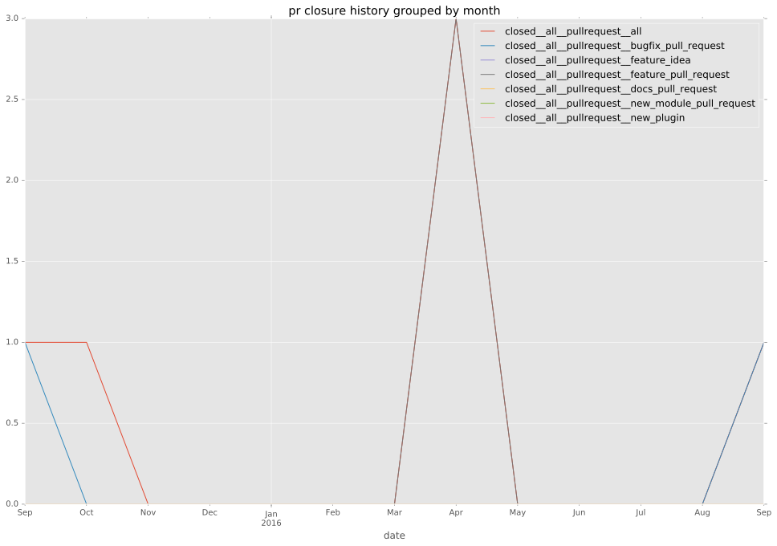

authors
- emonty
maintainers
- emonty
- shrews
- juliakreger
- j2sol
- rcarrillocruz
contributors
- larsks : 1 commits
- gundalow : 1 commits
- resmo : 3 commits
- rcarrillocruz : 5 commits
- Shrews : 19 commits
- emonty : 20 commits
total issue counts
bugfix pull request: 7
pullrequest: 12
feature pull request: 3
feature idea: 1
issue: 3
new plugin: 1
bug report: 3
issue history
pullrequest history

days open by issue type
feature pull request
count: 4
std: 5.7735026919
min: 0
max: 10
median: 5.0
mean: 5.0
all
count: 22
std: 45.1435660802
min: 0
max: 172
median: 2.0
mean: 24.6818181818
pullrequest
count: 0
std: nan
min: nan
max: nan
median: nan
mean: nan
bugfix pull request
count: 11
std: 13.8301383678
min: 0
max: 31
median: 0.0
mean: 8.54545454545
feature idea
count: 1
std: nan
min: 172
max: 172
median: 172.0
mean: 172.0
issue
count: 0
std: nan
min: nan
max: nan
median: nan
mean: nan
new plugin
count: 2
std: 0.0
min: 55
max: 55
median: 55.0
mean: 55.0
bug report
count: 4
std: 63.8924878213
min: 0
max: 132
median: 7.5
mean: 36.75
closures grouped by total days open